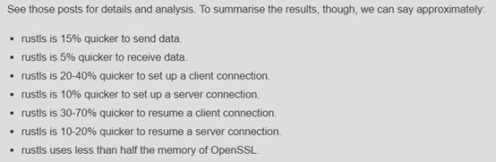
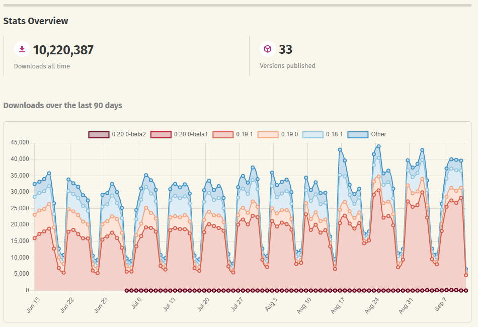

密码协议算法与Rust生态
- 作者： Sylvain Kerkour
- 译者： 王江桐（华为）
密码协议算法
本章将会简单介绍密码协议算法中常见概念，此篇Rust生态简介中涉及的算法，以及一些常用的相关算法。
安全目标
通常来说，通过加密方式，对于信息的传输，我们希望达成以下五个目标：
- 机密性（Confidentiality）: 保证信息私密性和保密性；
- 真实性（Authentication）: 确保信息是正确的人发来的；
- 完整性（Integrity）: 信息没有被篡改；
- 接入控制（Access control）: 避免资源滥用；
- 可获性（Availability）: 资源可以被使用。
不同的攻击方式可能针对于不同的目标进行攻击。比如DoS（拒绝服务Denial of Service）攻击就是针对可获性进行的攻击，使计算机或网络无法提供正常的服务。
算法概述
如果对常见密码算法做一个分类，那么结构图大概如下所示：

对称加密算法
对称加密（也叫私钥加密）指加密和解密使用相同密钥的加密算法。换句话来说，通讯双方使用相同的密钥。有时又叫传统密码算法，就是加密密钥能够从解密密钥中推算出来，同时解密密钥也可以从加密密钥中推算出来。而在大多数的对称算法中，加密密钥和解密密钥是相同的，所以也称这种加密算法为秘密密钥算法或单密钥算法。它要求发送方和接收方在安全通信之前，商定一个密钥。对称算法的安全性依赖于密钥，泄漏密钥就意味着任何人都可以对他们发送或接收的消息解密，所以密钥的保密性对通信的安全性至关重要。
对称加密算法的优点在于计算量小，加密速度快，加密效率高，以及使用长密钥时的难破解性。
对称加密算法的缺点在于，通讯双方如何安全地商定、交换、保管密钥是个难题。如果密钥泄漏，双方的所有通讯都不再安全。此外，每对用户使用对称加密算法时，都需要使用其他人不知道的惟一钥匙，这会使得发收信双方所拥有的钥匙数量呈几何级数增长。同时，由于双方的密钥是一样的，对称加密算法没有办法提供签名功能。
综上所述，对称加密算法可以保障信息的机密性与完整性，但是无法保障信息的真实性。对称加密算法除了算法本身以外，还需要约定密钥/生成密钥，交换密钥，然后再通过算法进行加解密。
关于密钥生成：
密钥派生函数（KDF，Key Derivation Function）可以从一个共享的秘密比特串中派生出需要的密钥数据。在密钥协商过程中，密钥派生函数作用在密钥交换所获共享的秘密比特串上，从中产生所需的会话密钥或进一步加密所需的密钥数据。
HKDF（HMAC-based key derivation function）在RFC 5869中提出，并于1997年作为RFC2104被公布，是基于HMAC的KDF，可以应用于各种协议（如TLS，RPF）和应用程序的构建。HKDF在逻辑上由两个部分组成。第一个部分采用输入密钥材料和“提取”，它是一个固定长度的伪随机密钥K。第二部分则将密钥扩展为几个随机密钥，并以我们需要的长度输出。
对称加密算法常用于：
- 保证信息机密性
- 验证加密（AEAD）
- 计算MAC
- SSH，SSL/TLS等网络协议中使用，在网络协议中传输信息
常见的以及此篇Rust生态简介中涉及的密钥生成算法有：
- blake2b
- HMAC_SHA
- PBKDF2（Password-Based Key Derivation Function2）
- Argon
- bcrypt, scrypt, SHA-crypt
常见的以及此篇Rust生态简介中涉及的密钥交换算法有：
- Diffi-Hellman
- X25519：定义在椭圆曲线Curve25519之上的DH协议
常见的以及此篇Rust生态简介中涉及的对称加密算法有：
- 流加密
- RC4
- chacha20, xsalsa20
- 分组加密
- 算法
- DES，3DES 与 AES
- BlowFish
- Deoxys
- EAS
- rabbit
- hc256
- 模式
- ECB（Electronic Code Book）/ 电码本
- CBC（Cipher Block Chaining）/ 密文分组链接
- OFB（Output Feedback）/ 输出反馈
- CFB（Cipher Feedback）/ 密文反馈
- CTR（Counter）/ 计算器模式
- GCM ( Galois/Counter Mode)
- CCM（Counter with CBC-MAC）
- 算法
密钥生成算法
blake2b
blake2b在2012提出，列于RFC-7693，用来替代MD5和SHA1，并且在速度上优于它们。常应用于区块链数字货币（decred, sia, verge，etc.）。
PBKDF2
PBKDF2（Password-Based Key Derivation Function 2）定义在RFC2898 Sec 5.2，测试集定义在RFC6070，同时NIST Special Publication800-132也有关于PBKDF2算法的介绍。PBKDF2算法通过多次hash来对密码进行加密。原理是通过password和salt进行hash，然后将结果作为salt在与password进行hash，多次重复此过程，生成最终的密文。此过程可能达到上千次，逆向破解的难度太大，破解一个密码的时间可能需要几百年，所以PBKDF2算法是安全的。IBM Security Directory Server使用了PBKDF2算法。
密钥交换算法：Diffi-Hellman
Diffie-Hellman算法是由Whitfield Diffie和Martin Hellman在1976年公布的一种密钥一致性算法。Diffie-Hellman是一种双方约定密钥的方法，而不是加密方法。Diffie-Hellman密钥交换算法及其优化首次发表的公开密钥算法出现在Diffie和Hellman的论文中，这篇影响深远的论文奠定了公开密钥密码编码学。
Diffie-Hellman算法的问题在于没有验证双方身份的信息，同时由于需要密集计算幂，容易遭受阻塞性攻击。Oakley算法是对Diffie-Hellman密钥交换算法的优化。
算法如图所示：

对称加密算法
流加密：ChaCha20与xsalsa20
ChaCha系列流密码，作为salsa密码的改良版，具有更强的抵抗密码分析攻击的特性，“20”表示该算法有20轮的加密计算。ChaCha由Daniel J. Bernstein在2005年提出，并于2008年提交至欧盟密码验证过程项目eSTREAM。由于是流密码，故以字节为单位进行加密，安全性的关键体现在密钥流生成的过程，即所依赖的伪随机数生成器（PRNG）的强度，加密过程即是将密钥流与明文逐字节异或得到密文，反之，解密是将密文再与密钥流做一次异或运算得到明文。
ChaCha运行速度通常快于AES。ChaCha20的密码强度是256 bits。
ChaCha20Poly1305详见以下MAC - Poly1305章节。Poly1305也由Bernstein提出，ChaCha20-Poly1305的使用已在RFC 7905中标准化。
xsalsa20是基于salsa20的流加密，免疫时序攻击。Salsa20的nonce只有64bit，xsalsa20使用192位的nonce。可用于私钥加密与私钥验证加密。
分组加密：DES，3DES与AES
DES（Data Encryption Standard）是AES（Advanced Encryption Standard，也称Rijndael加密法）的前身，都由美国联邦政府的国家标准局提出并确定为加密标准。3DES（Triple Data Encryption Algorithm）是对DES的改进，相当于是对每个数据块应用三次DES加密算法，是DES向AES过渡的加密算法。三者的安全性逐渐递增，然而DES与3DES已被NIST证实有安全性问题，在如今计算机的算力下已经可以利用有限资源被破解，因此不再赘述。
AES由美国联邦政府于2001年11月26日发布于FIPS PUB 197，并在2002年5月26日成为有效的标准。AES的区块长度固定为128 bits，192 bits，或256 bits，对应的名字分别为AES128，AES192，AES256。它的安全性由密钥位数决定，128位及以上的密钥长度可以保证算法不能通过当前有限资源破译。
AES的优势在于，它的计算非常快，因此一般用于对效率有要求的实时数据加密通信，比如在使用 VPN 或者代理进行加密通信时。
虽然算法本身是安全的，但是可能通过在特定场景下的旁路攻击（Side Channel Attack）被破译密匙。同时，作为对称加密算法，密钥传输与保管也是使用AES的潜在问题。
具体算法可见链接：高级加密标准 - 维基百科，自由的百科全书 (wikipedia.org)。
对称加密算法应用：MAC与HMAC
MAC（Message Authentication Code）也称消息认证码（带密钥的Hash函数）。密码学中，通信实体双方使用的一种验证机制，保证消息数据完整性的一种工具。构造方法由M.Bellare提出，安全性依赖于Hash函数，故也称带密钥的Hash函数。消息认证码是基于密钥和消息摘要所获得的一个值，可用于数据真实性认证和完整性校验。
HMAC是密钥相关的哈希运算消息认证码（Hash-based Message Authentication Code），由H.Krawezyk，M.Bellare，R.Canetti于1996年提出的一种基于Hash函数和密钥进行消息认证的方法，并于1997年作为RFC2104被公布，并在IPSec和其他网络协议（如SSL）中得以广泛应用，现在已经成为事实上的Internet安全标准。它可以与任何迭代散列函数捆绑使用。
MAC与HMAC的安全性来源于现有计算不可能找到冲突（Collision）结果来伪造mac。换句话说，对于已知输入x与其MAC结果M(x)，现有计算无法找到另一个输入x'使得M(x') == M(x)。
MAC/HMAC中计算常用以及此篇Rust生态简介中涉及的Hash函数有：
- SHA（SHA0，SHA1，SHA2：SHA224/256/384/512）
- SipHash
- MD系列（e.g. MD5）
- blake2, blake3
- FSB
- gost94
- groestl
- k12
- ripemd160/256/320
- shabal
- SM3
- Server relief
MAC/HMAC以及此篇Rust生态简介中涉及的算法有：
- Poly1305
Hash: SHA
SHA（Secure Hash Algorithm，安全散列算法) 是美国国家安全局 (NSA) 设计，美国国家标准与技术研究院 (NIST) 发布，FIPS所认证的一系列密码散列函数。在TLS、SSL、PGP、SSH、IPsec等网络协议与HMAC计算等中广泛使用。SHA0与SHA1已被证实不再安全，顾不再在赘述。
SHA224/256/384/512有时并称为SHA2，是SHA0与SHA1的后继者，在FIPS180-2中提出。
Hash: SipHash
Siphash是一种伪随机函数，也称散列函数)，由Jean-Philippe Aumasson and Daniel J. Bernstein在2012年于“SipHash: a fast short-input PRF” 中提出。该论文发表于INDOCRYPT 2012。Siphash与SHA等密码散列函数（cryptographic hash functions: a mathematical algorithm）计算方式不同。在防止冲突上优于SHA：除非SipHash的整个值域都被使用，对于相对小的应用（e.g. 在hash map中通过hash function生成索引）可以保证没有冲突，由此可以防止DOS攻击；SHA等算法则无法保证没有冲突。
Siphash的优势在于运算简单快速以及算法上安全，应用于操作系统（Linux kernel, OpenBSD, FreeBSD），语言库（OpenSSL libcrypto, Sodium, etc.）与一些应用（Wireguard, Redis, etc.）的Hash计算。
然而SipHash并不是传统意义上不需要密钥的hash函数，为了达成安全性，它需要密钥来进行计算。
Hash: MD5
MD5 Message-Digest Algorithm，一种被广泛使用的密码散列函数，可以产生出一个128位（16字节）的散列值（hash value），用于确保信息传输完整一致。这套算法的程序在 RFC 1321 标准中被加以规范。1996年后该算法被证实存在弱点，可以被加以破解，对于需要高度安全性的数据，专家一般建议改用其他算法，如SHA-2。2004年，证实MD5算法无法防止碰撞（collision），因此不适用于安全性认证，如SSL公开密钥认证或是数字签名等用途。
MAC/HMAC: Poly1305
Poly1305是Daniel.J.Bernstein创建的消息认证码，可用于检测消息的完整性和验证消息的真实性，现常在网络安全协议（SSL/TLS）中与salsa20或ChaCha20流密码结合使用。ChaCha20-Poly1305是Google所采用的一种新式加密算法，性能强大，在CPU为精简指令集的ARM平台上尤为显著，在同等配置的手机中表现是AES的4倍（ARM v8之后加入了AES指令，所以在这些平台上的设备，AES方式反而比chacha20-Poly1305方式更快，性能更好）。ChaCha20-Poly1305的使用已在RFC 7905中标准化。谷歌选择了ChaCha20和伯恩斯坦的Poly1305消息认证码取代过去一直在互联网安全领域使用的基于OpenSSL的RC4密码，并应用在OpenSSH中的ChaCha20-Poly1305新算法中。
Poly1305消息认证码的输入为32字节（256bit）的密钥和任意长度的消息比特流，经过一系列计算生成16字节（128bit）的摘要。不依赖AES的Poly1305变种已由互联网工程任务组在RFC 8439中标准化。
非对称加密算法/公开密钥算法
非对称加密算法又称公开密钥算法。顾名思义，每个人都有一对唯一对应的密钥：公开密钥（简称公钥）和私人密钥（简称私钥），公钥对外公开，私钥由个人秘密保存；用其中一把密钥加密，就只能用另一把密钥解密。非对称加密算法的典型代表是RSA。非对称加密的安全性通常依赖于算法在数学上的复杂程度，通常涉及到的底层数学问题在难度上是NP complete或NP hard，目前这类问题在计算复杂度理论上仍无证明表明，它们可以像P等级问题一样，在多项式时间内被解决。换句话来说，非对称加密涉及到的底层数学问题无法通过利用当前的有限资源来求解，例如整数因子分解问题（RSA）与离散对数问题（DSA，椭圆曲线）。
非对称加密算法实现机密信息交换的基本过程是：接收方生成一对密钥并将公钥公开，需要向接收方发送信息的其他角色（发送方）使用该密钥（接收方的公钥）对机密信息进行加密后再发送给接收方；接收方再用自己私钥对加密后的信息进行解密。接收方想要回复发送方时正好相反，使用发送方的公钥对数据进行加密，同理，接收方使用自己的私钥来进行解密。
非对称加密算法的优点在于，它解决了对称加密算法在密钥上的困难，消除了用户交换密钥的需要。非对称加密算法的安全性依赖于私钥的私密保管，比起对称加密算法，提升了安全性。
非对称加密算法的缺点在于，由于安全性依赖于复杂的算法强度，使得加解密速度没有对称加密算法的速度快，依赖于算法的不同，有时甚至慢数千倍。
综上所述，对称加密算法可以保障信息的机密性与完整性，同时由于公钥和私钥的存在，也可以保障信息的真实性。
非对称加密算法常用于：
- 保证信息机密性
- 数字签名与证书
- 由于以上用例，也常用于网络安全机制（SSL/TLS，VPN，etc.）
常见的以及此篇Rust生态简介中涉及的非对称加密算法有：
- RSA
- DSA
- 椭圆曲线：Curve25519，P256/384, BP256/384, k256, SM2
- Elgamal
- Rabin
常见的以及此篇Rust生态简介中涉及的数字签名算法有：
- ECDSA：ED25519
非对称加密算法
RSA
RSA是1977年由Ron Rivest、Adi Shamir和Leonard Adleman一起提出的，RSA就是他们三人姓氏开头字母拼在一起组成的。1983年麻省理工学院在美国为RSA算法申请了专利。RSA允许你选择公钥的大小，512位的密钥被视为不安全的，768位的密钥不用担心受到除了国家安全管理（NSA）外的其他事物的危害，1024位的密钥几乎是安全的。RSA在一些主要产品内部都有嵌入，像 Windows、网景 Navigator、 Quicken和 Lotus Notes。
RSA属于PKCS（Public-Key Cryptography Standards） #1。PKCS #1由RSA实验室发布，提供了RSA算法的定义和实现方式。PKCS #1 v2.1作为RFC 3447公布，目前最新版本为v2.2。
椭圆曲线：Curve25519
Curve25519是一种椭圆曲线加密算法，基于蒙哥马利曲线，由美国国家标准与技术研究院NIST在RFC 7748正式公布，提供128 bits的安全性。它的密钥大小是256 bits。自从2014年以后，OpenSSH的ECDH（Elliptic Curve Diffie-Hellman）默认使用Curve25519。2018年，RFC8446作为新的TLS v1.3标准公布，强制要求X25519，ED25519，X448和ED448算法。
X25519与X448定义了ECDH密匙交换中的DH协议。
ED25519与ED448则是定义在Curve25519与Curve448之上的数字签名算法。ED25519是一种EDDSA算法，是一种在扭曲爱德华兹曲线（Twisted Edwards curves）上使用 Schnorr 机制来实现的一种数字签名机制，优势在于高效以及高安全性。
25519系列曲线是目前最快的椭圆曲线加密算法。
Rust生态与库
为什么Rust std中没有密码库
“为什么Rust std中没有密码库”中非常简明扼要地解释了原因，大家可以去内部论坛阅读完整文章。如果再次概述一下的话，主要原因在于，要保证标准库保持小型以及稳定，同时满足安全库的标准需要很多时间和精力。然而，社区核心成员并没有这么多时间和精力来投入开发，并且由于各种各样的原因， 成立社区加解密工作组的计划也失败了。
虽然如此，社区上也有很多安全相关的库，比如Rust-openssl、ring和rustcrypto。但是rust-openssl被指出代码质量不好，并且缺少文档；ring则存在大量的汇编代码和C代码 ，不便于后期维护和开发；rustcrypto由纯rust实现，大概是目前社区中加解密算法最为完善的安全库了。
Rust的密码生态
根据“Empirical Study of Vulnerabilities in Cryptographic Libraries”，在现有的流行密码相关库中，37.2%系统级漏洞的根源在于内存问题，27.2%才是算法本身的问题。同时，过于复杂的密码系统使得安全问题更容易产生，问题被发现的周期也很长，中位数在4.18年。以C的OpenSSL库为例，每一千行就会有一个攻击点，预示大型的C/C++代码或许存在潜在问题。作为一门以内存安全为特色的语言，Rust编写的三方密码库或许能解决许多C和C++密码库难以解决的问题。
本期Rust周报推文“Overview of the Rust cryptography ecosystem”主要介绍的库有：
- Sodiumoxide
- Ring
- Delek
- rust-crypto
- Rustls
Sodiumoxide
Sodiumoxide是C中非常流行的密码库libsodium的Rust封装，应用于Discord, apache, tuweni, Abot(Slack), RavenDB, Wordpress等项目。libsodium fork了C密码库NaCl，因此Sodiumoxide的大多数文档来源于NaCl。Sodiumoxide的性能和通用性自不用说，但是由于它是libsodium的封装，存在“Empirical Study of Vulnerabilities in Cryptographic Libraries”一文中提到的C与C++库的维护问题。同时，Sodiumoxide已不再继续维护。

Sodiumoxide实现的算法有：
- 对称加密算法
- 验证加密：aes256gcm, chacha20poly1305
- 密钥生成：blake2b
- 密钥交换：x25519blake2b
- 非对称加密算法
- curve25519xsalsa20poly1305
- HMAC：hmacsha256/512
- HASH：SipHasher13，SHA256/512
Ring
Ring被设计为适用于小型设备、微控制器和IoT应用，编写语言上包含了Rust、C和汇编语言。

Ring实现的算法有：
- 对称加密算法
- 验证加密：aes128/256gcm, chacha20poly1305
- 密钥生成：HKDF_SHA256/384/512，PBKDF2_HMAC_SHA1，PBKDF2_HMAC_SHA256/384/512
- 非对称加密算法
- 数字签名：ECDSA（P-256 Curve）+ SHA256/384，ED25519，RSA_PKCS1_SHA1/256/384/512，RSA_PSS_SHA256/384/512
- HMAC：HMACSHA256/384/512
- HASH：SHA1, SHA256/384/512
Dalek
相较于其他库，Dalek专注于椭圆曲线相关的算法Rust实现，是一个在github上的rust库集合。


Dalek实现的椭圆曲线相关算法有：
- X25519
- Curve25519
- ED25519
rust-crypto
rust-crypto是一个大集合体，整合了大部分密码学需要使用的模块。

rust-crypto涉及到的算法有：
- 对称加密算法
- 验证加密：aesgcm, aessiv, ccm, chacha20poly1305, xsalsa20poly1305, deoxys, eax, mgm
- 密钥生成：Argon2, bcrypt, PBKDF2, scrypt, SHA-crypt
- 加解密：
- 模式：CFB，CTR, OFB
- 算法：chacha20, rabbit, salsa20, hc256
- 非对称加密算法
- 数字签名：ECDSA，ED25519
- 椭圆曲线：BP256/384, k256, P-256/384
- HMAC：HMACSHA256/384/512
- HASH：SHA1, SHA256/384/512, blake2, FSB, MD系列, gost94, groestl, k12, ripemd160/256/320, shabal, SM3
Rustls
Rustls是一个Rust TLS库，底层使用ring，目标是为TLS 1.2或更高版本提供安全功能和组件。根据报告，在一定场景下效率比OpenSSL更高。

作者认为在未来，Rustls或许有可能替代OpenSSL与BoringSSL等C的SSL库。

Crate使用概述图

Rust库中涉及到的C库
NaCl
NaCl包含了各种各样的密码算法，被用于网络通讯，加解密，数字签名等应用场合，支持C，C++和Python。优势在于运算速度非常快，会自动替用户选择最优加密方案，防止使用加密库的人未必了解不同加密方式的优劣，同时没有动态内存分配与秘密信息的数据流，一定程度上保证内存安全以及防止缓存计时攻击。
NaCl库实现的算法基本与Sodium相同。
Sodium
Sodium是一个可移植、跨平台可编译、NaCl库的一个fork，但是扩展了NaCl库的内容。
Sodium实现的算法有：
- 对称加密算法
- 验证加密：aes256gcm, chacha20poly1305
- 密钥交换：X25519, blake2b-512
- 加解密：
- 算法：xchacha20
- 非对称加密算法
- 数字签名：ED25519ph，ED25519
- 椭圆曲线：BP256/384, k256, P-256/384
- HMAC：HMACSHA256/512
- Hash: blake2b, siphash, Argon2, Scrypt, Server relief
- 匿名消息盒（持有对方公有密匙，匿名发送信息）：X25519，XSalsa20-Poly1305
引用
Overview of the Rust cryptography ecosystem，https://kerkour.com/blog/rust-cryptography-ecosystem
Is Triple DES Secure?，https://cryptosense.com/blog/is-triple-des-secure
密码学应用基础，http://ilearning.huawei.com/next/learnCourse.html?courseId=9691